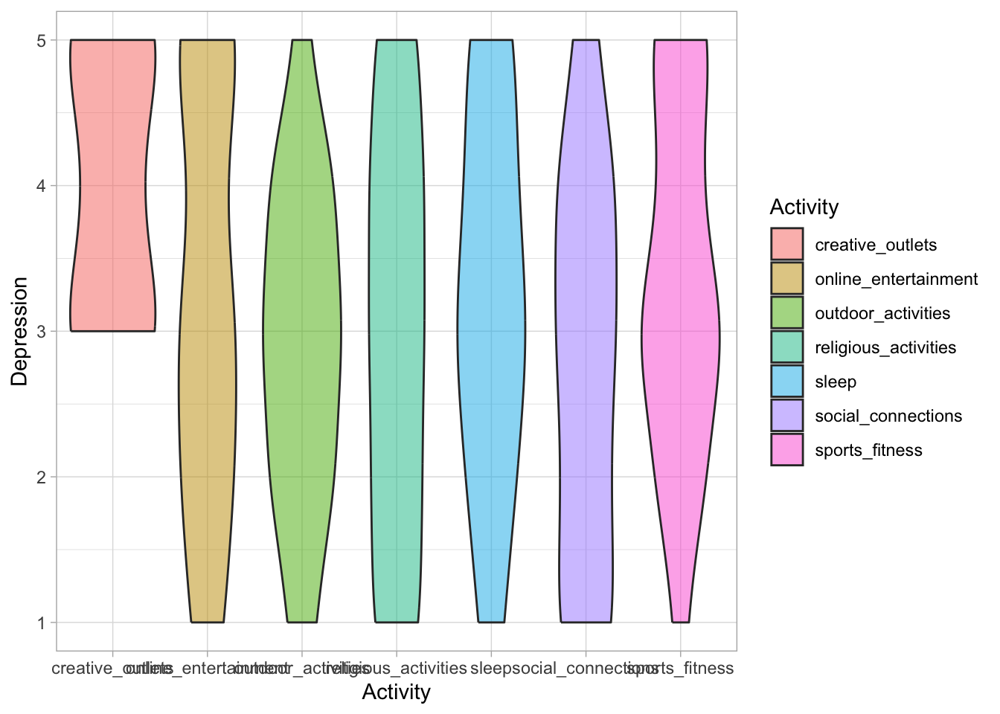
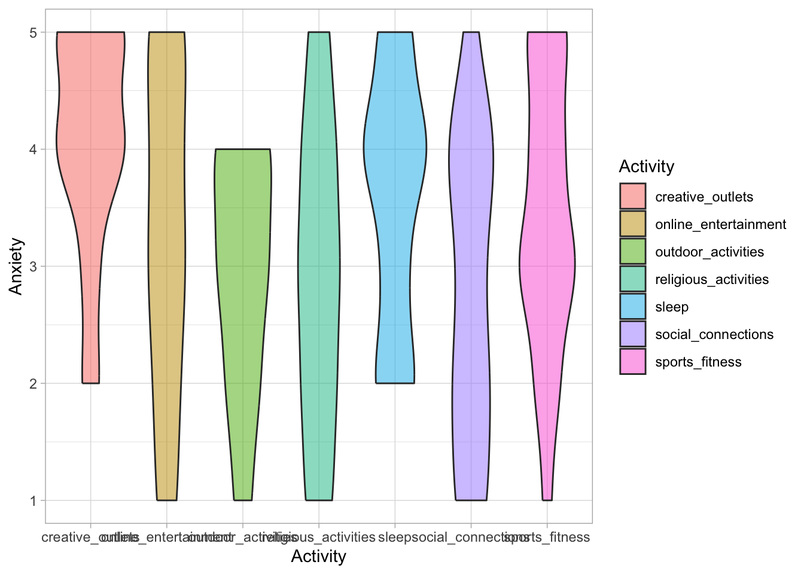
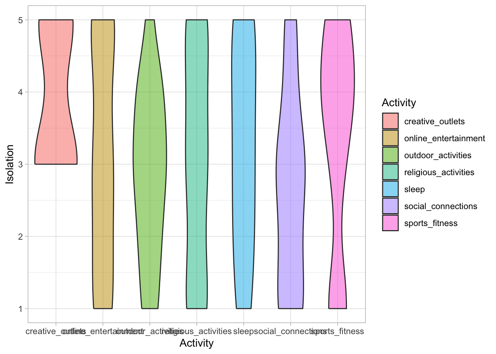
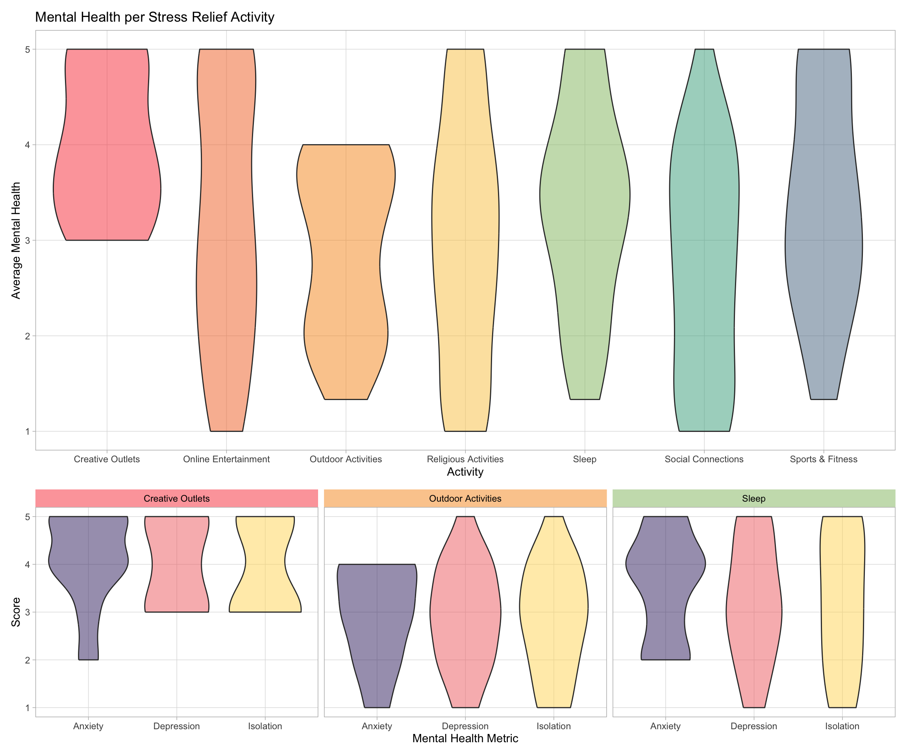

Appendix D — Tori D
Work area to try code
Looking at Stress Relief Activities
#Stress Relief Activities Count
Clean ifelse Function
Table of Stress Relief activies
Code
Activity_spread <- MentalHealthSurvey |>
select(stress_relief_activities, number_activities, cgpa, depression, anxiety, isolation, social_relationships, study_satisfaction, academic_workload, academic_pressure, financial_concerns, future_insecurity) |>
mutate(
social_connections = present("Social Connections"),
religious_activities = present("Religious Activities"),
online_entertainment = present("Online Entertainment"),
sports_fitness = present("Sports and Fitness"),
outdoor_activities = present("Outdoor Activities"),
creative_outlets = present("Creative Outlets"),
nothing = present("Nothing"),
sleep = present("Sleep")
)Most popular activities
Code
Activity_spread |>
summarize(total_social = sum(social_connections), total_religious = sum(religious_activities), total_online = sum(online_entertainment), total_sports = sum(sports_fitness), total_outdoor = sum(outdoor_activities), total_creative = sum(creative_outlets), total_nothing = sum(nothing), total_sleep = sum(sleep))# A tibble: 1 × 8
total_social total_religious total_online total_sports total_outdoor
<int> <int> <int> <int> <int>
1 33 46 37 20 19
# ℹ 3 more variables: total_creative <int>, total_nothing <int>,
# total_sleep <int>Mean Depression for each stress relief activity
Code
Activity_spread |>
mutate(
across(.cols = everything(), ~ ifelse(., depression, NA))) |>
select(social_connections, religious_activities, online_entertainment, sports_fitness, outdoor_activities, creative_outlets, sleep) |>
pivot_longer(cols = c(1:7), names_to = "Activity", values_to = "Depression") |>
filter(!is.na(Depression)) |>
ggplot(aes(x = Activity, y = Depression)) +
geom_violin(aes(fill = Activity), alpha = 0.5) +
theme_light()
Mean Anxiety for each stress relief activity
Code
Activity_spread |>
mutate(
across(.cols = everything(), ~ ifelse(., anxiety, NA))) |>
select(social_connections, religious_activities, online_entertainment, sports_fitness, outdoor_activities, creative_outlets, sleep) |>
pivot_longer(cols = c(1:7), names_to = "Activity", values_to = "Anxiety") |>
filter(!is.na(Anxiety)) |>
ggplot(aes(x = Activity, y = Anxiety)) +
geom_violin(aes(fill = Activity), alpha = 0.5) +
theme_light()
Mean Isolation for each stress relief activity
Code
Activity_spread |>
mutate(
across(.cols = everything(), ~ ifelse(., isolation, NA))) |>
select(social_connections, religious_activities, online_entertainment, sports_fitness, outdoor_activities, creative_outlets, sleep) |>
pivot_longer(cols = c(1:7), names_to = "Activity", values_to = "Isolation") |>
filter(!is.na(Isolation)) |>
ggplot(aes(x = Activity, y = Isolation)) +
geom_violin(aes(fill = Activity), alpha = 0.5) +
theme_light()
Functions
Code
column_creation <- function(data, category) {
category_col_name <- as.character(substitute(category))
mutate(data,
across(
.cols = everything(),
.fns = \(x) ifelse(x, data[[category_col_name]], NA),
.names = "{col}_{category_col_name}"))
}
metric_table <- function(metric) {
metric_name <- as.character(substitute(metric))
cleaned <- Activity_spread |>
select({{metric_name}}, social_connections, religious_activities, online_entertainment, sports_fitness, outdoor_activities, creative_outlets, sleep)
column_creation(cleaned, category = {{metric_name}}) |>
select(1, c(10:16))
}
#metric_table(isolation)Code
#metric <- Activity_spread$isolation
#metric_name <- as.character(substitute(metric))
#cleaned <- Activity_spread |>
#select(metric, social_connections, religious_activities, online_entertainment, sports_fitness, outdoor_activities, creative_outlets, sleep)
# category_col_name <- as.character(substitute(metric))
# mutate(cleaned,
# across(
# .cols = everything(),
# .fns = \(x) ifelse(x, cleaned[[category_col_name]], NA),
# .names = "{col}_{category_col_name}"))
# select(1, c(10:16))Mean mental health table
Code
Isolation_table <- Activity_spread |>
select(isolation, social_connections, religious_activities, online_entertainment, sports_fitness, outdoor_activities, creative_outlets, sleep) |>
column_creation(category = isolation) |>
select(c(10:16)) |>
pivot_longer(cols = c(1:7), names_to = "Activity", values_to = "Isolation") |>
mutate(
Activity = str_remove_all(Activity, "_isolation")
) |>
mutate(
row_id = row_number()
)
Depression_table <- Activity_spread |>
select(depression, social_connections, religious_activities, online_entertainment, sports_fitness, outdoor_activities, creative_outlets, sleep) |>
column_creation(category = depression) |>
select(c(10:16)) |>
pivot_longer(cols = c(1:7), names_to = "Activity", values_to = "Depression") |>
mutate(
Activity = str_remove_all(Activity, "_depression")
) |>
mutate(
row_id = row_number()
)
Anxiety_table <- Activity_spread |>
select(anxiety, social_connections, religious_activities, online_entertainment, sports_fitness, outdoor_activities, creative_outlets, sleep) |>
column_creation(category = anxiety) |>
select(c(10:16)) |>
pivot_longer(cols = c(1:7), names_to = "Activity", values_to = "Anxiety") |>
mutate(
Activity = str_remove_all(Activity, "_anxiety")
) |>
mutate(
row_id = row_number()
)
Mean_mental_table <- left_join(Isolation_table, Depression_table, by = c("row_id", "Activity")) |>
left_join(Anxiety_table, by = c("row_id", "Activity")) |>
mutate(
mean_mental_health = (Isolation + Depression + Anxiety)/3
) |>
mutate(Activity = recode(Activity,
creative_outlets = "Creative Outlets",
online_entertainment = "Online Entertainment",
outdoor_activities = "Outdoor Activities",
religious_activities = "Religious Activities",
sleep = "Sleep",
social_connections = "Social Connections",
sports_fitness = "Sports & Fitness"
))Visualization
Code
total_mean <- Mean_mental_table |>
ggplot(aes(x = Activity, y = mean_mental_health)) +
geom_violin(aes(fill = Activity), alpha = 0.5) +
theme_light() +
labs(y = "Average Mental Health", title = "Mental Health per Stress Relief Activity") +
theme(
legend.position = "none",
panel.grid.minor = element_blank()
) +
scale_fill_manual(
values = c("Creative Outlets" = "#F94144", "Online Entertainment" = "#F3722C", "Outdoor Activities" = "#F8961E", "Religious Activities" = "#F9C74F", "Sleep" = "#90BE6D", "Social Connections" = "#43AA8B","Sports & Fitness" = "#577590")
)Creative Outlets
Code
Creative_outlet_focus <- Mean_mental_table |>
filter(Activity == "Creative Outlets") |>
filter(!is.na(mean_mental_health)) |>
pivot_longer(
cols = c(Isolation, Depression, Anxiety),
names_to = "type",
values_to = "score"
)
creative <- ggplot(Creative_outlet_focus, aes(x = type, y = score)) +
geom_violin(aes(fill = type), alpha = 0.5) +
theme_light() +
labs(x = "Mental Health Metric", y = "Score", title = "Creative Outlets") +
theme(
legend.position = "none",
panel.grid.minor = element_blank()
) +
scale_fill_manual(
values = c("Anxiety" = "#3e2b6f", "Depression" = "#f27070", "Isolation" = "#ffd966")
)Outdoor Activities
Code
outdoor <- Mean_mental_table |>
filter(Activity == "Outdoor Activities") |>
filter(!is.na(mean_mental_health)) |>
pivot_longer(
cols = c(Isolation, Depression, Anxiety),
names_to = "type",
values_to = "score"
) |>
ggplot(aes(x = type, y = score)) +
geom_violin(aes(fill = type), alpha = 0.5) +
theme_light() +
labs(x = "Mental Health Metric", y = "Score", title = "Outdoor Activities") +
theme(
legend.position = "none",
panel.grid.minor = element_blank(),
axis.title.y = element_blank()
) +
scale_fill_manual(
values = c("Anxiety" = "#3e2b6f", "Depression" = "#f27070", "Isolation" = "#ffd966")
)Sleep
Code
sleep <- Mean_mental_table |>
filter(Activity == "Sleep") |>
filter(!is.na(mean_mental_health)) |>
pivot_longer(
cols = c(Isolation, Depression, Anxiety),
names_to = "type",
values_to = "score"
) |>
ggplot(aes(x = type, y = score)) +
geom_violin(aes(fill = type), alpha = 0.5) +
theme_light() +
labs(x = "Mental Health Metric", y = "Score", title = "Sleep") +
theme(
legend.position = "none",
panel.grid.minor = element_blank(),
axis.title.y = element_blank()
) +
scale_fill_manual(
values = c("Anxiety" = "#3e2b6f", "Depression" = "#f27070", "Isolation" = "#ffd966")
)Code
outlet_focus <- Mean_mental_table |>
filter(Activity == "Creative Outlets"| Activity == "Outdoor Activities" | Activity == "Sleep" ) |>
filter(!is.na(mean_mental_health)) |>
pivot_longer(
cols = c(Isolation, Depression, Anxiety),
names_to = "type",
values_to = "score"
) |>
ggplot(aes(x = type, y = score)) +
geom_violin(aes(fill = type), alpha = 0.5) +
theme_light() +
labs(x = "Mental Health Metric", y = "Score") +
theme(
legend.position = "none",
panel.grid.minor = element_blank(),
) +
scale_fill_manual(
values = c("Anxiety" = "#3e2b6f", "Depression" = "#f27070", "Isolation" = "#ffd966")
) +
facet_wrap2(~ Activity,
strip = strip_themed(
background_x = elem_list_rect(fill = c("#F9414480", "#F8961E80", "#90Be6D80"), alpha = 0.5),
text_x = elem_list_text(color = "black")))Combining the Plots
Code
# combinded <- (total_mean)/(creative + outdoor + sleep & xlab(NULL)) + plot_layout(heights = c(2, 1))
#
# wrap_elements(panel = combinded) +
# labs(tag = "Mental Health Metric") +
# theme(
# plot.tag = element_text(size = rel(1)),
# plot.tag.position = "bottom"
# )
total_mean / outlet_focus + plot_layout(heights = c(2, 1))
Looking at GPA
Code
gpa <- MentalHealthSurvey |>
mutate(mean_mental_health = (isolation + depression + anxiety)/3) |>
ggplot(aes(x = cgpa, y = mean_mental_health)) +
geom_boxplot(aes(fill = cgpa)) +
theme_light() +
theme(
legend.position = "none",
panel.grid.minor = element_blank()
) +
scale_fill_manual(
values = c("0.0-0.0" = "#FD5901", "1.5-2.0" = "#F78104", "2.0-2.5" = "#FAAB36", "2.5-3.0" = "#249EA0", "3.0-3.5" = "#008083", "3.5-4.0" = "#005F60")
) +
labs(x = "GPA", y = "Average Mental Health")# A tibble: 6 × 2
cgpa n
<chr> <int>
1 0.0-0.0 5
2 1.5-2.0 2
3 2.0-2.5 4
4 2.5-3.0 22
5 3.0-3.5 27
6 3.5-4.0 27Code
strip_colors <- c("#249EA0", "#008083","#005F60")
gpa_invest <- MentalHealthSurvey |>
filter(cgpa == "3.5-4.0" | cgpa == "3.0-3.5" | cgpa == "2.5-3.0") |>
select(cgpa, isolation, depression, anxiety) |>
pivot_longer(
cols = c(isolation, depression, anxiety),
names_to = "Type",
values_to = "Score"
) |>
ggplot(aes(x = Type, y = Score)) +
geom_violin(aes(fill = Type), alpha = 0.5) +
theme_light() +
scale_fill_manual(
values = c("anxiety" = "#3e2b6f", "depression" = "#f27070", "isolation" = "#ffd966")
) +
facet_wrap2(~cgpa, strip = strip_themed(background_x = elem_list_rect(fill = c("#249EA0", "#008083","#005F60")))) +
theme(
legend.position = "none",
panel.grid.minor = element_blank(),
strip.background = element_rect(fill = strip_colors)
)